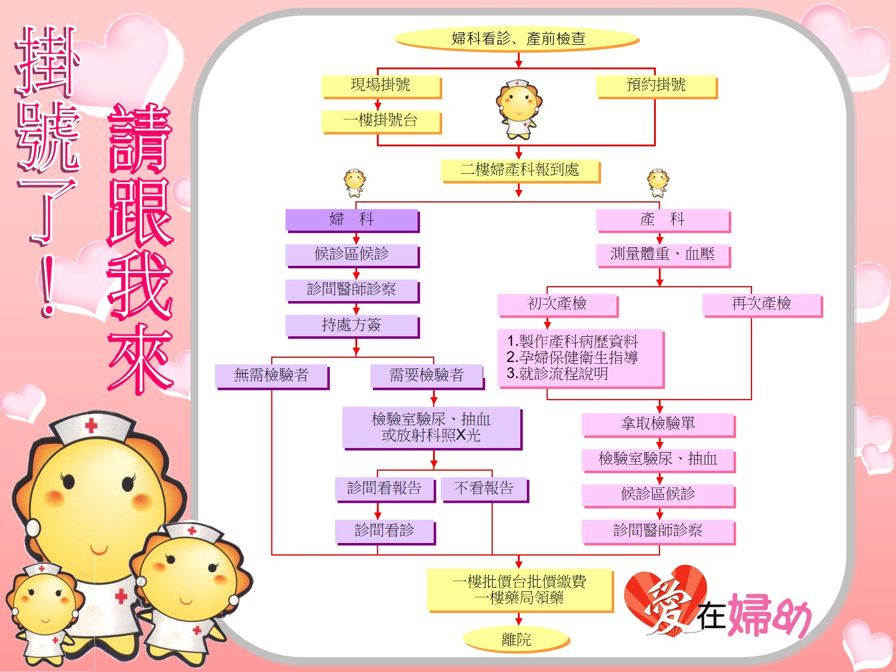

孕期指導
第三孕期產前母乳哺餵護理指導
★依嬰兒需求哺餵母乳的重要性
1.奶水較早來，嬰兒可吸收營養，體重增加較快。
2. 哺餵母乳較容易順利，減少乳房腫脹及疼痛的問題。
★ 嬰兒想吃的表現包括:主動尋乳表現、吸吮動作、伸舌頭、吸手指
★剛出生新生兒胃容量 10-20cc，故剛出生寶寶母乳需求量少，
之後隨日增加，媽媽的乳汁也會隨寶寶的吸吮逐日增加。
★如何促進奶水充足 :1.讓寶寶多吸吮母乳。 2.母親飲食營養充足並多休息。

